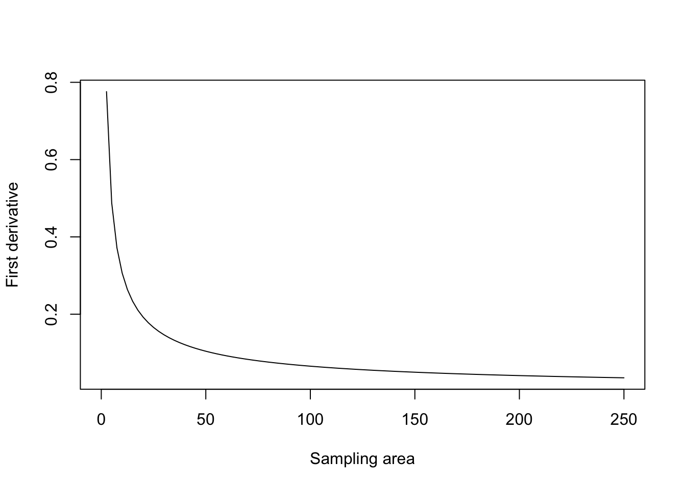
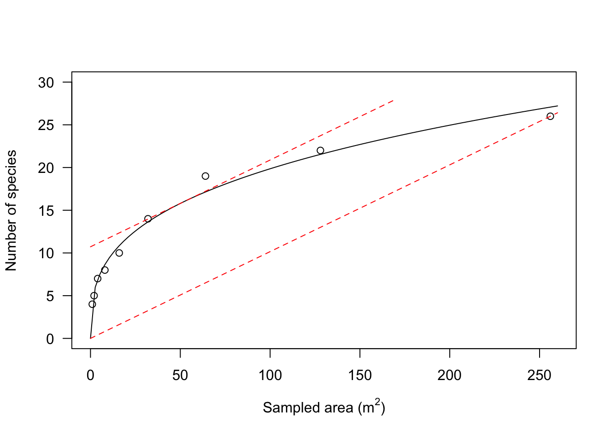

library(statforbiology)
speciesArea <- getAgroData("speciesArea")
# drm fit
model <- drm(numSpecies ~ Area, fct = DRC.powerCurve(),
data = speciesArea)
summary(model)
##
## Model fitted: Power curve (Freundlich equation) (2 parms)
##
## Parameter estimates:
##
## Estimate Std. Error t-value p-value
## a:(Intercept) 4.348404 0.337197 12.896 3.917e-06 ***
## b:(Intercept) 0.329770 0.016723 19.719 2.155e-07 ***
## ---
## Signif. codes: 0 '***' 0.001 '**' 0.01 '*' 0.05 '.' 0.1 ' ' 1
##
## Residual standard error:
##
## 0.9588598 (7 degrees of freedom)In general, undergraduate students in biology/ecology courses tend to consider the derivatives as a very abstract entity, with no real usefulness in the everyday life. In my work as a teacher, I have often tried to fight against such an attitude, by providing convincing examples on how we can use the derivatives to get a better understanding about the changes on a given system.
In this post I’ll tell you about a recent situation where I was involved with derivatives. A few weeks ago, a colleague of mine wrote me to ask the following question (I’m changing it a little, to make it, hopefully, more interesting). He asked: “I am using a power curve to model how the size of the sampling area affects species richness. How can I quantify my knowledge gain?”. This is an interesting question, indeed, although I feel I should provide you with some background information.
Ecologists and botanists are very often involved with field surveys, aimed at determining the richness of plant species in a given territory. In most cases, such territories are too big to conduct exhaustive samplings and, therefore, it is necessary to resort to sampling a smaller area. The problem is that it is clearly recognised that the wider the sampled area, the higher the number of plant species that we encounter. So, what is the minimum sampling area to conduct a reliable survey?
First of all, let’s try to model the species-are relationship. In some instances, this relationship can be described by using a power curve, that is coded as follows:
\[Y = a \, X^b\]
where \(Y\) is the number of species, \(X\) is the sampling area, \(a\) and \(b\) are regression parameters. In order to understand such a relationship, we can take the ‘speciesArea’ dataset in the ‘statforbiology’ package, that comes from Cristaudo et al. (2015). We can load this dataset by using the getAgroData() function (which is specific to the dataset contained in the statforbiology package) and we can fit a power curve to this dataset, by using the drm() function in the ‘drc’ package, together with the DRC.powerCurve() self-starter in the ‘statforbiology’ package.
It is very useful to look at the resulting graph: we clearly see that the harder we work, the higher is our knowledge gain, in terms of plant richness. We may not be experts of plant surveys, but we should keep in mind that this may be really hard work, especially if we have to survey citrus groves under the sunshine of an Italian summer in Sicily! Therefore, we’d better optimise our effort and enlarge our sampling area only if this gives us a relevant payback.
plot(model, log = "", xlab = expression(paste("Sampled area (", m^{2}, ")",
sep = "")), ylab = "Number of species")
In this respect, we see that every additional sampling effort gives a progressively lower payback; for example, an increase of 50 m2 in sampling area let us discover almost 16 new species when we begin our survey, while, when we have already sampled 200 m2, a similar increase of sampling area let us discover only 2 additional plant species.
predict(model, newdata = data.frame(Area = c(50)))
## Prediction
## 15.7979
#
predict(model, newdata = data.frame(Area = c(250))) -
predict(model, newdata = data.frame(Area = c(200)))
## Prediction
## 1.90552The above argument motivates my colleague’s question: how do we quantify the knowledge gain in relation to the effort it costs? This is a typical situation where the first derivative of the power function comes in handy. You might remember from high school that the first derivative represents the slope of the line tangent to the function at any point on the graph. Its value represents the ratio between the knowledge gain and the increase in sampling effort and it is a very good measure of how well our additional effort is paid back in terms of knowledge gain. In other words, the higher the derivative, the higher our convenience to increase our sampling effort.
But, how do we find a derivative? Years ago, it was a big relief for me to discover that R can efficiently help us with this task. In particular, we have two main functions available: D() and deriv(). The first one takes an expression as an argument and returns an expression, which can be evaluated to get the derivative value. For example, if we want to know the derivative value for a sampling area ranging from 1 to 100 m2, we can use the following code:
powerCurve.der <- D(expression(a * X ^ b), "X")
powerCurve.der
## a * (X^(b - 1) * b)
a <- coef(model)[1]
b <- coef(model)[2]
X <- seq(1, 100, by = 10)
eval(powerCurve.der)
## [1] 1.43397379 0.28745425 0.18635899 0.14354434 0.11901599 0.10281978
## [7] 0.09119265 0.08237067 0.07540802 0.06974823It confirms what we already knew, that is our payback decreases while our effort increases; it is also interesting to note that the function deparse() transforms the resulting expression into character strings, which we can pass to the gnlht() function in the ‘statforbiology’ package, to calculate standard errors for the estimated derivatives.
funList <- list(deparse(powerCurve.der))
samplingAreas <- data.frame(X = seq(1, 100, by = 10))
pred <- gnlht(model, funList, const = samplingAreas,
parameterNames = c("a", "b"))
pred
## Form X Estimate SE t-value p-value
## 1 a * (X^(b - 1) * b) 1 1.43397379 0.046072499 31.12429 9.127464e-09
## 2 a * (X^(b - 1) * b) 11 0.28745425 0.007794058 36.88121 2.800293e-09
## 3 a * (X^(b - 1) * b) 21 0.18635899 0.006470755 28.80019 1.565496e-08
## 4 a * (X^(b - 1) * b) 31 0.14354434 0.005745031 24.98583 4.196158e-08
## 5 a * (X^(b - 1) * b) 41 0.11901599 0.005240148 22.71233 8.123235e-08
## 6 a * (X^(b - 1) * b) 51 0.10281978 0.004857404 21.16764 1.321660e-07
## 7 a * (X^(b - 1) * b) 61 0.09119265 0.004552575 20.03100 1.934121e-07
## 8 a * (X^(b - 1) * b) 71 0.08237067 0.004301572 19.14897 2.637561e-07
## 9 a * (X^(b - 1) * b) 81 0.07540802 0.004089788 18.43813 3.421480e-07
## 10 a * (X^(b - 1) * b) 91 0.06974823 0.003907714 17.84886 4.276907e-07The deriv() function is similar, but it takes a formula as an argument and, if we provide the function.arg() argument, it returns a function, which is very handy for further processing. For example, we can use such function for plotting purposes, as shown in the box below.
powerCurve.der2 <- deriv(~ a * X ^ b, "X",
function.arg = c("a", "b", "X"))
#
curve(attr(powerCurve.der2(4.348, 0.32977, x), "gradient"),
from = 0, to = 250, ylab = "First derivative",
xlab = "Sampling area")
Now, how do we use the above information to decide how big our sampling area should be? According to Muller-Dumboise and Ellenberg (1974), the minimal sampling area should be selected so that an increase of 10% in sampling area yields an increase of 10% in the number of sampled species. In other words, the minimal sampling area should be selected so that the sampling effort in relative terms is equal to the gain in knowledge, also in relative terms.
Considering that the total sampling area was 256 m2 and the total number of species was 26, the minimum sampling area should correspond to the point on the graph where the first derivative is equal to 2.6/25.6 = 26/256 = 0.1015625. Graphically, we need to find a point along the x-axis where the tangent line to the graph is parallel to the line connecting the origin of axes and the point with co-ordinates \(x = 256\) and \(y = 26\) (see the graph below).

In order to find this minimum sampling area, we solve the derivative function so that it returns a value of 0.1015625. We can do this by using the uniroot() function as shown in the box below. The minimum sampling area is approximately equal to 52 m2.
solveFun <- function(x) attr(powerCurve.der2(4.348, 0.32977, x),
"gradient") - 0.1015625
uniroot(solveFun, lower = 0, upper = 256)$root
## [1] 51.93759I hope that I have put another brick to convince you that derivatives can help us to solve some problems in the everyday life! If you have comments, please drop me a line.
Thanks for reading!
Andrea Onofri
Department of Agricultural, Food and Environmental Sciences
University of Perugia (Italy)
andrea.onofri@unipg.it

References
- Cristaudo, A., Restuccia, A., Onofri, A., Giudice, V.L., Gresta, F., 2015. Species-area relationships and minimum area in citrus grove weed communities. Plant Biosystems 149, 337–345.
- Muller-Dumbois, D., Ellenberg, H., 1974. Community sampling: the relevè method., in: Aims and Methods of Vegetation Ecology. John Wiley & Sons, Inc., Species/Area curves, pp. 45–66.